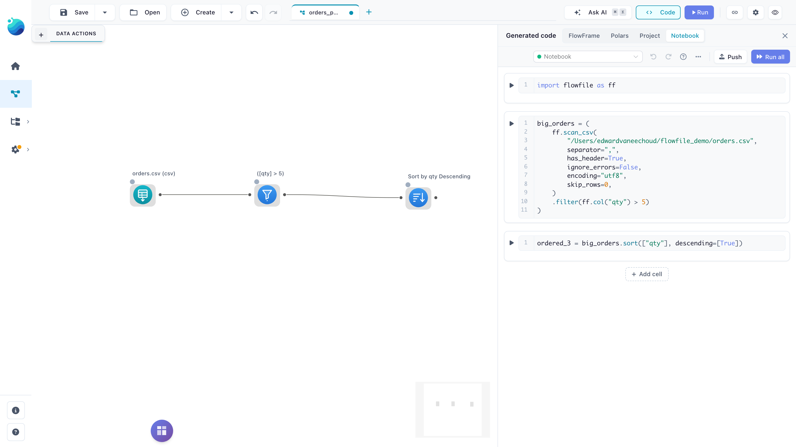
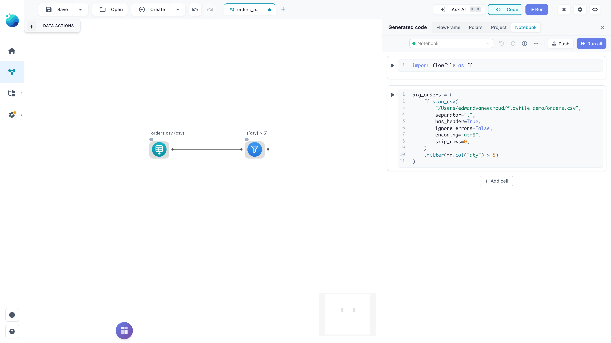

The Canvas Notebook
The canvas notebook shows the open flow as Python code, one cell per statement, in the Notebook mode of the Code panel. It uses the editor of a catalog notebook, with the same cells, shortcuts, undo, drag and completions. By default it has no kernel: running a cell writes your edits onto the canvas and runs the cell's node where the flow runs. In the desktop app you can also run it on a kernel, where cells run as real Python. This page covers what the cells contain, what Run does for each kind of cell, what a sync refuses, running on a kernel, and how the notebook behaves in each deployment.
See it: a filter cell pushed to the canvas, and a Sort node added on the canvas back in the notebook
Opening it
Open the Code panel (Ctrl/Cmd+G) and pick Notebook, or click Modify in notebook on a flow's page in the Catalog, which opens the flow with the notebook already showing. The panel stays open while you click the canvas or switch flows; a double-click on an empty spot of the canvas closes it, and closing it keeps your edits. The notebook renders the flow:
- The leading cells hold the imports, the flow parameters and the canvas's visual groups (
cleaning = ff.FlowGroup("Cleaning", color="blue"), a nested group withparent_group=), then one cell per statement in the order the flow runs; a cell holds every node its statement chains together, and a node inside a group ends its call with.add_to_group(cleaning). - Cells use the Python API (
import flowfile as ff): fluentFlowFramecalls for built-in transforms, and the native node classes (ff.Gate,ff.RunFlow,ff.PythonScript, custom nodes, parameters) for the rest. - A Python Script node written in its drawer is a
@ff.python_scriptfunction without areturn: the body is the script as written, its cells separated by# %%markers, and the frames it reads go in the call below it (python_script_2 = _script_2(df)). A script that would not come back from that form unchanged, such as one holding a multi-line string, is anff.PythonScript(cells=[...])call instead. - A Polars Code node holding a function is that function as written, followed by the call that wires it (
transformed_5 = df.polars_code(high_value)); rename the function or its parameters and the node keeps your names. A node holding a snippet is a generated_polars_code_<id>(input_df)function whose body is the snippet with its result returned; edit the body and it stays a snippet, rename the function or a parameter and it becomes a function node. - A node's variable is its node reference when it has one, else a label derived from its type and id (
filtered_12). - Dropping, connecting or saving a node on the canvas updates the cells within a couple of seconds; a cell you edited keeps your text. Moving a node changes nothing.

The code is rendered on the server and needs no Python session, no kernel and no Docker, so every user can open it in every deployment.
Placeholder cells
A node the notebook cannot express as code becomes a placeholder cell that still binds the node's output to a variable, so the cells below it keep working:
enriched = ff.canvas_node(7, joined)
ff.canvas_node(node_id, *inputs, output=None) adopts canvas node 7 with its current settings and wires it to the frames passed. The comment on the cell's first line says why it is a placeholder, for example:
| Reason on the cell | Fix |
|---|---|
| not configured yet, inputs not fully connected | Configure or connect the node on the canvas. A placeholder for an unconfigured node can also be replaced with code. |
| downstream of node N, which is not editable as code | Fix node N; everything below it follows. |
| nodes below it read its output, which ff.explore does not return | An Explore data node feeds other nodes, which only code can wire. Connect them to the node's input instead. |
| headers or query parameters hold a credential | A REST API reader with a key in its headers or parameters. Move the key to a secret. |
| No code generator implemented for node type '...' | The node type has no code form; edit it on the canvas. |
A Polars LazyFrame node (a frame passed in from Python) is unsupported: it cannot be rebuilt, and a flow that contains one cannot be synced until the node is replaced on the canvas.
Running a cell
This section describes the notebook with No kernel picked. Cell code never runs as Python on the server. The server reads the cells as a description of the flow, and data is only computed where the flow runs: the backend and worker, and a Python Script node on its kernel.
Run (the cell's run button, Shift+Enter or Cmd/Ctrl+Enter) first syncs the cells to the canvas when the notebook no longer matches the canvas (a cell edited, added, removed or moved), then does what the cell's kind calls for:
| Cell | Example | What Run shows |
|---|---|---|
| Imports | import flowfile as ff |
Nothing. |
| Groups | cleaning = ff.FlowGroup("Cleaning", color="blue") |
Nothing. |
| Parameters | min_quantity = ff.add_flow_parameter(flow, ff.Parameter("min_quantity", default=8, type="integer")) |
The flow's parameters, each with its name, type and default, read from the canvas after the sync. |
| Node | filtered_2 = source_1.filter(ff.col("quantity") >= min_quantity) |
Runs the cell's last node and everything it depends on, honouring gates, then shows up to 100 of its rows. A writer cell writes, and a change-tracking cursor or Kafka offsets then move with what it wrote. Any other node cell only shows rows and leaves them where they are. |
| Plain value | threshold = 8 |
Nothing. |
A node cell's table is the node's preview, the one the canvas shows, so it holds at most 100 rows and its title says so. A longer result ends with "showing 100 of N rows" when its row count is known; when it is not, as for a lazy result the run never counted, the title says the total is unknown. In the Performance execution mode, where a run keeps no rows per node, the cell then fetches its node's rows the way the preview's Fetch Data button does, so Run can take a moment longer. A node with more than one output, such as a gate with an else output, shows its first output, and a writer shows the rows it received. A node that failed, or did not run because a node above it failed, shows Node #N failed: and that error instead of rows; after a cancelled run the cell says the node did not run. When the cell's node is no longer on the canvas, because a sync or a canvas edit removed it, the cell says Node #N is not on the canvas. and reads nothing.
Run and preview on canvas in a node cell's ⋯ menu runs the cell the same way, then opens the node's preview on the canvas.
A cell cannot print, display or compute rows: a node cell's output is always its node's preview. Code outside the flow description, such as print(...), a loop, import os or a lambda, stops the sync and nothing reaches the canvas: the failing line is highlighted and the cell's output gives the reason, for example Line 1: `import os` is not part of the notebook's flow code; this needs a kernel.
Edited, synced and failed cells
Each cell carries a marker that compares it with the canvas:
| Marker | Meaning |
|---|---|
| Edited | The cell's code differs from what the canvas holds; the next Run, Run all or Push syncs it. |
| Synced | The canvas holds the cell's code. |
| Sync failed | The last sync stopped at this cell, and its output says why. Editing the cell marks it edited again. |
These markers take the place of the catalog notebook's Code changed — rerun and Earlier cells changed — rerun labels: the canvas notebook keeps no variables between runs.
Run all and Push
Run all syncs when the notebook no longer matches the canvas (a cell edited, added, removed or moved), runs the whole flow as Run in the top toolbar does, then fills in every parameters and node cell's output; imports and plain cells show nothing.
Push only syncs: it writes the cells onto the canvas and runs nothing.

See it: a longer example with a group-by, filter and join pushed from one cell
What a sync does
Run, Run all and Push sync the same way. The server reads every cell top to bottom on a fresh copy of the flow, so a name a cell defines is available to the cells below it; no variable is kept from one sync to the next. A cell may only describe the flow, with the calls the notebook itself renders (ff readers, transforms and writers, the native node classes, parameters and plain values) and a few Polars frame methods it renders another way, such as .limit(n), .tail(n) and .write_ipc(path). Such a method places the node the Python API builds for it, most often a Polars Code node, and the next render shows that node instead of your call. ff.LazyFrame(data) and ff.DataFrame(data) work the same way: they take Polars' constructor arguments (schema=, orient= and the like) and place a Manual Input node holding the data, which the next render writes as ff.from_raw_data(...). The result is applied to the canvas as one step that Undo reverts.
A sync runs no node and opens no connection. A source, or a node whose columns depend on its data (Polars code, pivot, custom nodes, a data cleansing that removes null columns), keeps the columns the canvas shows while its settings are unchanged; a new or edited one takes the columns its cell declares, the columns Polars works out from the call when .tail(n) or a similar Polars frame method, or with_columns, select, filter or sort, places a Polars Code node, the header of the local file it reads or a catalog table's registered columns, and otherwise the sync treats it as having no columns.
A sync keeps the id, position, description and cached results of every node the edit does not touch, and a lowercase variable name assigned in a cell becomes that node's reference. Visual groups follow the cells too: a node whose cell changed lands in the group its .add_to_group(...) names (a new ff.FlowGroup in the groups cell becomes a new box, a renamed or recoloured one updates the box), a node whose cell did not change keeps its canvas group, and a box left empty is removed.
What a sync refuses or asks about
A sync is refused, with the reason on the failing cell or in a message, when:
- the canvas changed since the cells were rendered: the panel refreshes the cells, keeps your edits and says the canvas changed; run or push again;
- a cell holds code outside the flow description (it needs a kernel); the cell shows the line;
- the flow contains a Polars LazyFrame node (a cell cannot create one:
ff.FlowFrame(pl.LazyFrame(...))needs a kernel); - a cell places a custom node that is not installed, or whose installed file fails to load;
- a REST API reader carries an inline secret instead of a secret name;
- a source or writer names a connection you cannot use, or, in a Docker deployment, a cloud reader or writer has a local path or no connection;
- a cell calls a build-time write or runs a flow; notebook mode lists the calls.
Push asks for confirmation first, listing the reasons, when the sync deletes nodes, changes a node's type, changes flow parameters (parameter changes are not undone by Undo), takes a node reference from another node, drops an input a cell did not rebuild, changes the names a Python Script node reads its inputs by, names a kernel you do not own, or places a node it could not check because a node above it has no known columns (the run checks it). Run and Run all ask only when the sync deletes nodes, and show the other reasons as a warning once the sync is applied.
Running on a kernel
Without a kernel, a cell only describes nodes: Flowfile reads it, updates the canvas and shows the node's preview. With a notebook kernel picked, cells run as real Python, so loops, print, other imports and display(...) work as they do in a script. Running a cell then leaves the canvas alone; Push is what changes it. This works in the desktop app and in a default pip install flowfile (see Limits).
A notebook kernel is a kernel on the Notebook image: the Lite image with this app's flowfile installed. The session is the Python process on that kernel that holds your cells' variables.
Setting it up
- Open the kernel picker in the notebook toolbar.
- Click Create notebook kernel. The kernel is created, started and selected for this flow; nothing is installed on your machine. If the Notebook image is not downloaded yet, the button reads Download image and create notebook kernel and downloads it first (several hundred MB, once per Flowfile version).
To adjust the kernel's settings first, pick Customise…, which opens the kernel form with the same settings filled in.
A flow you have never picked a kernel for selects a notebook kernel by itself once one exists, a running one first. Pick No kernel to go back to running cells on the canvas; the flow remembers that choice.
What the buttons do
| Action | With a kernel picked |
|---|---|
| Run | Runs the cell as Python in the session. The canvas does not change. |
| Run all | Runs every cell in the session. |
| Push | Runs every cell again in a fresh session, then applies what they build to the canvas as one step, with the same review as without a kernel. The session then starts over from the canvas. |
| Run and preview on canvas (⋯) | Pushes first when the notebook differs from the canvas, then runs the node on the canvas, as without a kernel. |
| Reset session (⋯) | Drops the session's variables and binds one variable per canvas node again. |
| Stop | Shown beside a running cell's run button. Interrupts the cell, and cancels the canvas run it is waiting on for rows. |
Using canvas nodes in a cell
When the session opens, every node on the canvas is already a variable, named as in its cell, so a cell can use it straight away:
big = filtered_2.filter(ff.col("quantity") > 10)
display(big)
display(frame) shows the frame's rows. You don't need to run the flow first: when the kernel can't compute a node's rows itself, as for a file, catalog table or database reader, Flowfile runs that node and hands its rows to the kernel.
Two cases behave differently:
- A Python Script node without declared outputs has no columns in the session until the canvas has run it. Run it with Run and preview on canvas, or run the flow; the next cell you run then sees its columns, and so do frames built on it in earlier cells.
- A writer in a cell writes nothing. It adds a writer node, which writes once you push and the flow runs.
Files
The kernel can't see the files on your machine. Flowfile's own readers work because Flowfile reads the file for the kernel; plain Python file access does not.
| Works in a cell | Doesn't work in a cell |
|---|---|
ff.read_csv(...), ff.scan_csv(...), the other ff readers and list_files |
pl.read_csv(...), open(...) |
An ff writer, which adds a writer node that writes when the flow runs |
df.write_csv(...) and other direct writes |
Write paths as they are on your machine, such as C:\Users\me\data\sales.csv on Windows. A push stores the path as written.
Models and artifacts
flowfile_ctx works in cells as it does in a Python Script node (The flowfile_ctx API). An artifact published with flowfile_ctx.publish_artifact in a cell stays in the session: later cells can read it, Python Script nodes on the canvas cannot. To hand a model to the canvas, publish it from the Python Script node's own code, or use flowfile_ctx.publish_global, which stores it in the catalog.
A cell can't wait on its own kernel
While a cell runs, its kernel is busy, so a canvas run the cell waits on cannot use that kernel. When the cell needs a node that runs there, such as a Python Script node on the same kernel (also inside a subflow or a virtual table's producer), the cell stops at once with a message naming the node. Run that node first with Run and preview on canvas, while the kernel is free, or run the notebook on another kernel.
How the kernel gets its data
- The kernel mounts no folder of your machine. Files, catalog tables, saved flows and your installed custom nodes reach it through Flowfile, which copies the custom nodes' code into the kernel so a cell can place them.
- A node that exists only in your cells and that the kernel can't compute (a file or catalog table read, a database, API or Kafka source, a subflow, a gate, a Python Script on another kernel) is run by Flowfile from the cell's settings, over its inputs' rows. Its columns are known as soon as the cell builds it, and the canvas doesn't change.
- A cell that builds a node with the same settings and inputs as a canvas node reads that canvas node's rows, so a Python Script cell run again, alone or with Run all, still shows rows. After an edit to the cell, or to a cell above it, Flowfile runs the node again from the cell.
- Catalog lookups from a cell, such as a table's record, a flow reference, a connection's name or
ff.kernels, are answered by Flowfile. - Stored secrets never reach the kernel in any form. Cloud and database sources, and custom nodes with a secret setting, always run in Flowfile, from the canvas or from the cell's settings.
- The kernel holds no copy of the catalog database. A cell that opens it itself, through
flowfile_core'sget_db_context(), stops with a message naming thefffunctions to use instead. - Showing a node's rows does not move a change-tracking cursor or commit Kafka offsets, unless that node is a writer the canvas has to run.
Limits
- Kernel mode is available only in the desktop app and in a
pip install flowfilewithFLOWFILE_MODEunset (orelectron), and only when your browser runs on the same machine as Flowfile. Docker deployments keep the notebook without a kernel. - The kernel's
flowfilemust be the same version as the app. After an app update the toolbar shows Update notebook kernel: it restarts the kernel on this version's Notebook image, downloading it, which clears everything the session holds in memory.
Kernels, Docker and deployments
With No kernel picked, the notebook starts no Python process and needs no Docker. The one exception is a Python Script node: its cell is an ff.PythonScript or @ff.python_script definition, and running that cell runs the node on its kernel, which needs Docker as it does on the canvas. To run Python that prints, displays or computes, use this notebook on a kernel, a Python Script node or a catalog notebook.
What a user can do with the notebook of their own flows depends on how Flowfile runs:
Desktop app, or pip install flowfile |
Docker deployment, or FLOWFILE_MODE=package |
|
|---|---|---|
| View and edit cells | Everyone | Everyone |
| Run cells while they match the canvas | Everyone | Everyone |
| Sync edits to the canvas | Everyone | Admins only |
| Run on a kernel | Yes | No |
Outside the desktop app's mode, syncing needs an admin account because the catalog lookups a cell can reach do not check each user's access. Other users can still edit cells, but Run and Run all on edited cells, and Push, keep the edits in the notebook, and a banner says that syncing needs an admin. The notebook has no settings of its own.
Exporting the notebook
The ⋯ menu in the toolbar saves the cells so the code can leave Flowfile:
- Export as Python script… writes a
.pyfile with a# %%marker before each cell (# %% [markdown]for a Markdown cell, whose text becomes comments). VS Code, Spyder and Jupytext read the markers as cells, and plainpythonruns the file top to bottom. - Export as Jupyter notebook… writes an
.ipynbfor Jupyter, VS Code or Colab, with the last output of every cell that ran in the panel. - Copy as Python script puts the same script on the clipboard.
The file is named after the flow and holds the cells as they are in the panel, unsynced edits included. The desktop app asks where to save; the browser downloads the file. Nothing is sent anywhere.
What is not saved with the flow
The notebook is a view of the flow, not a file of its own:
- Edits stay in this browser window until a sync writes them to the canvas. Reloading the page drops unsynced edits.
- Saving the flow saves the canvas, not the notebook.
- A cell that places no node, such as
threshold = 8, is not part of the flow. After a sync it stays in the panel only until the canvas next changes.
Related
- Export to Python: a standalone script or project from the same flow, which does not round-trip.
- Catalog notebooks: notebooks stored in the catalog that run on a kernel.
- Native node classes: the Python API the cells use, and what notebook mode changes.